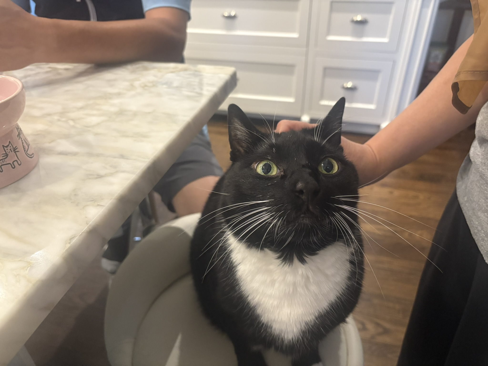
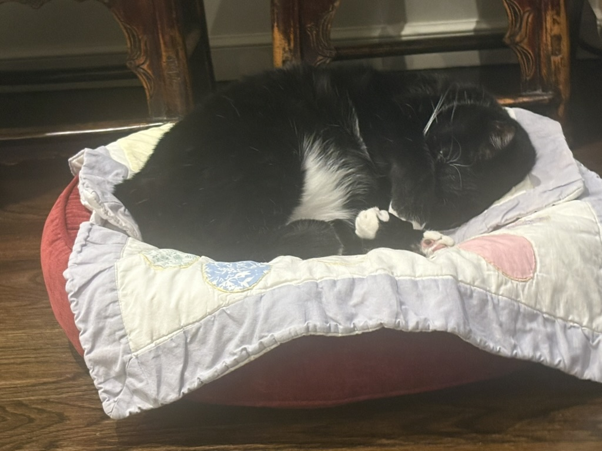
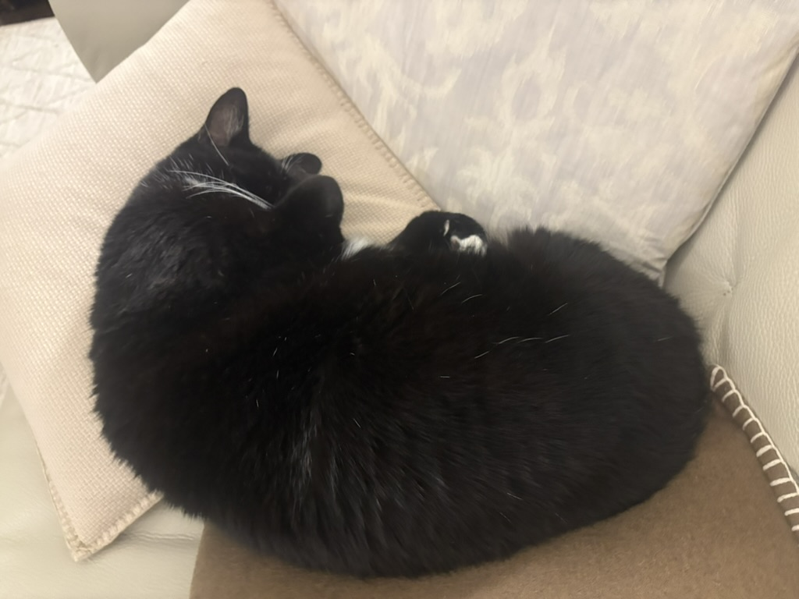

Professional Email: bqi1@gc.cuny.edu

Car
Brandon Qi is a PhD student at the CUNY Graduate Center. His research interests include both popular and art music from East Asia, as well as quantitative approaches to musical structures. He has presented his work at various regional music theory societies as well as the 2025 SMT annual conference, and has upcoming book chapters on Vocaloid music and musical participation in East Asian video streaming platforms.
| 2026 NECMT Handout |
| 2026 MTSNYS Handout |
|
 |
 |